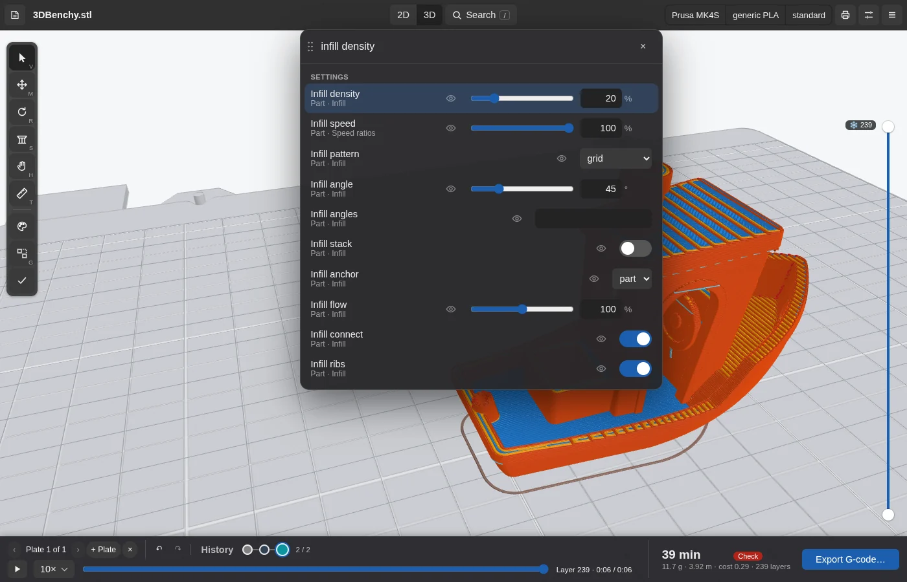
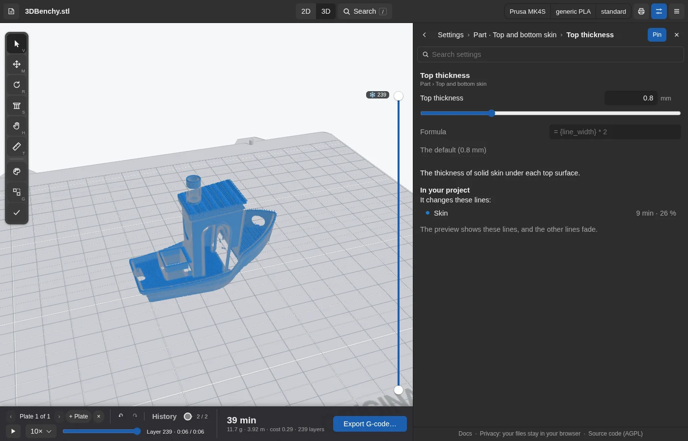

Everyday tasks
4Change a setting
Press /, type a few letters, and drag the slider. The print slices again while you drag.

Search with /
- Press
/, or click the search field in the header. - Type a few letters, for example
infill,brim, orexport. Other names also work:perimetersfinds the walls, andtempthe temperatures. - Change the value in the result. The part slices again at once.
- Click the eye of a setting (or press V) to show only the lines that it changes.
- An action (Export G-code, Arrange the plate, Undo, and others) runs with a click or Enter.
- The search does not block the view. Turn the view and click lines while it is open.
- Keys: ↑ and ↓ go through the results. ← and → change the value. Esc closes the search.
Undock the search
The search field is always in the header. The results show under it.
- Click the undock button at the right end of the field. The search becomes a card over the view.
- Drag the head of the card to move it. Drag its lower right corner to change its size.
- The card opens at the same place and size next time. A double-click on its head moves it back to its first place.
- While the search is undocked, the header has a Search button. Click it, or press
/, to open the card. - Click the dock button in the head of the card to put the search back in the header.
The settings panel

- Press N, or click the panel button in the header.
- Click a section, then a setting. The › at the end of a row opens the page of the setting.
- Click Pin to put the panel beside the view. Drag the splitter to change its width.
The sections come in the order of use. The part starts with the layers, the lines, the walls, the skin, and the infill. Then come the speed, the travel, the support, and the skirt and brim. The filament starts with the filament, the temperatures, the flow, and the cooling. In each section, the settings that most people change come first, and the expert settings come last. The search (/) finds each setting.
The page of a setting gives its value, its default (with Reset), what it does, and the lines that it changes. While a setting is open, the view shows only its lines. The other lines become ghosts.
To change a number:
- type it, and press Enter;
- press ↑ or ↓ to change it by one step;
- drag its slider.
A speed is a ratio of what the printer and the filament allow. So one quality works on each printer. Next to the ratio, the app shows the speed that it gives on this printer: "50 % ≈ 75 mm/s". The flow limit can make the speed lower. The search results show it too.
Where a value comes from
A higher level replaces the value of a lower one. A small tag under the name of a setting gives its level.
| Level | Where you set it |
|---|---|
| Default | Built in. |
| Global | Your settings for all prints. |
| Printer | The printer menu. |
| Filament | The filament menu, or the roll in the printer. |
| Quality | The quality menu, from the finest to the coarsest: Fine (0.1 mm), Standard (0.2 mm), Strong (0.2 mm, more walls), Draft (0.3 mm), or Coarse (0.4 mm). The Linux app also lists your own qualities. |
| This print | Your changes for this plate. |
| This part | The changes of one part. |
In the Linux app, the filament and the quality menus have Save as profile…. See Profiles for the files.
Tip: A part can have settings of its own: click + Add a setting for this part on its card. A setting can also change for some layers, or follow a formula. See Formulas and rules.